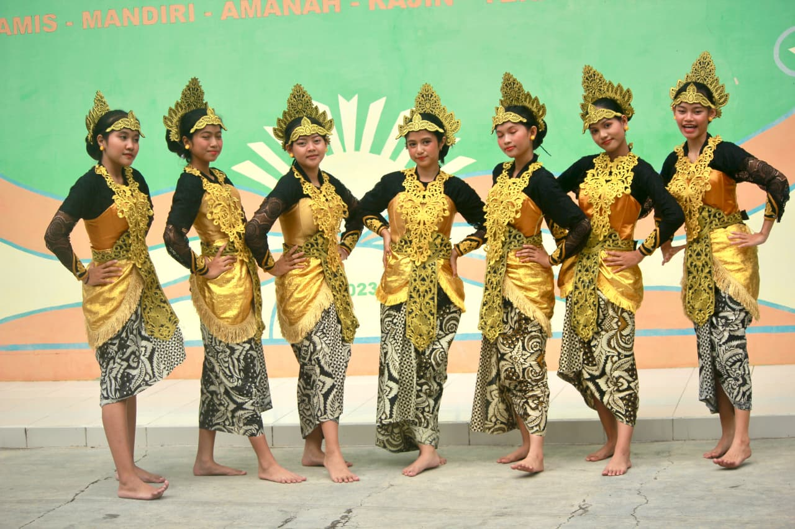
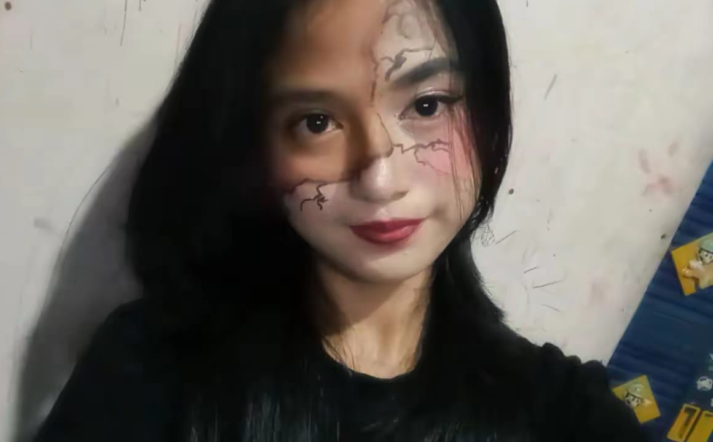

୨ৎ ARTICLE ₊˚⊹♡ |
|||||
| ♡ Home | ♡ Profile | ♡ Gallery | ♡ Article | ♡ Guest Book |
|
 |
1. MenariMenari merupakan salah satu hobi yang saya sukai sejak kecil. Saya memiliki ketertarikan terhadap seni tari, khususnya tarian tradisional Jawa dan tari kreasi. Bagi saya, menari bukan hanya bentuk ekspresi diri, tetapi juga cara untuk mengenal dan melestarikan kebudayaan Jawa. Karena ketertarikan tersebut, saya pernah bergabung dengan Sanggar Krincing Manis Dance di Dusun Jaban, Tridadi, Sleman, selama kurang lebih empat tahun. Saya juga pernah mengikuti ekstrakurikuler tari saat SMP dan SMK. Saat SMP, saya aktif tampil dalam berbagai acara sekolah, seperti mengisi acara dan class meeting. Selain itu, saya pernah mengikuti berbagai perlombaan dan festival tari di berbagai tempat. Melalui pengalaman tersebut, saya belajar tentang kedisiplinan, kerja sama, kekompakan, dan rasa percaya diri. Pengalaman ini juga menumbuhkan rasa cinta terhadap budaya sendiri. Bagi saya, menari bukan sekadar hobi, tetapi juga bentuk kecintaan dan upaya untuk melestarikan kebudayaan Jawa. |
2. Mendengarkan MusikMendengarkan musik menjadi salah satu kegiatan yang sering saya lakukan di waktu luang. Saya senang mendengarkan berbagai jenis lagu karena musik dapat memberikan suasana hati yang lebih baik dan membuat pikiran menjadi lebih rileks. Bagiku, musik juga menjadi teman saat sedang belajar, beristirahat, maupun melakukan aktivitas sehari-hari. |
|
 |
3. Rias WajahRias wajah merupakan salah satu hobi yang saya sukai karena saya senang mempelajari berbagai teknik dan mencoba berbagai gaya riasan. Bagi saya, merias wajah bukan hanya untuk mempercantik penampilan, tetapi juga menjadi sarana untuk mengekspresikan kreativitas dan meningkatkan kepercayaan diri. Melalui hobi ini, saya belajar mengenal berbagai produk kosmetik, memadukan warna, serta menyesuaikan riasan dengan kebutuhan. Saya juga belajar tentang ketelitian, kesabaran, dan kreativitas. Saya berharap dapat terus mengembangkan kemampuan dalam bidang tata rias agar menjadi keterampilan yang bermanfaat di masa mendatang. |
Itulah beberapa hobi yang saya sukai. Setiap hobi memiliki kesenangan dan manfaat tersendiri bagi saya.
|
@PersonalWebUnge |